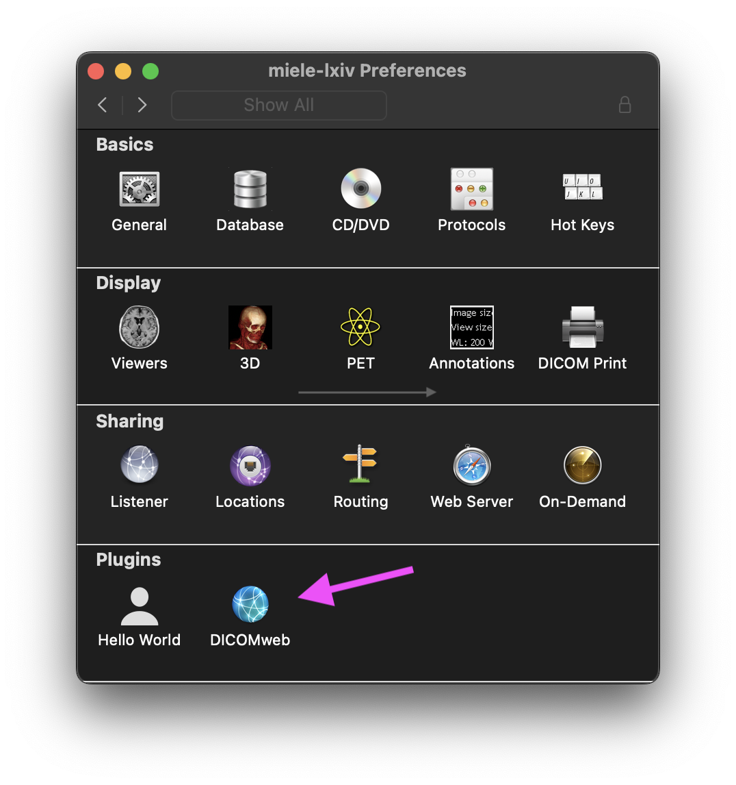
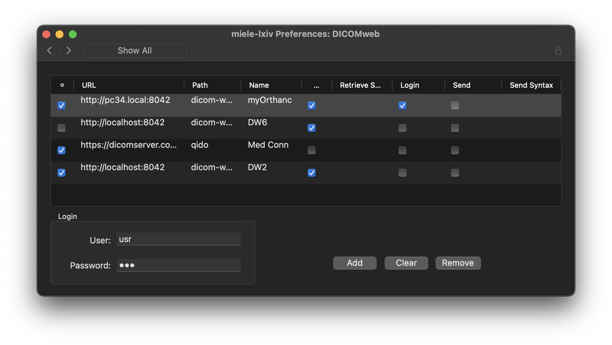
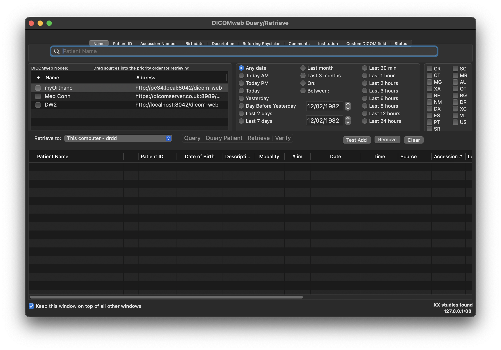

Description: DICOMweb client and server
Version: 0.7.36 (beta)
Price: Free
Usage:
- Preferences for the client, accessible via the application Preferences
- Client
- Menu entry to open GUI window
- Search (QIDO-RS)
- Retrieve (WADO-RS)
- Menu entry for Store (STOW-RS). The selected items in the thumbnail pane of the Database window will be sent to another DICOMweb server
- Server
- It runs as an extension of the Web Portal functionality, using the same IP address and port number. No configuration required other than the settings for the Web Portal
References:
DICOMweb
Screenshots:


